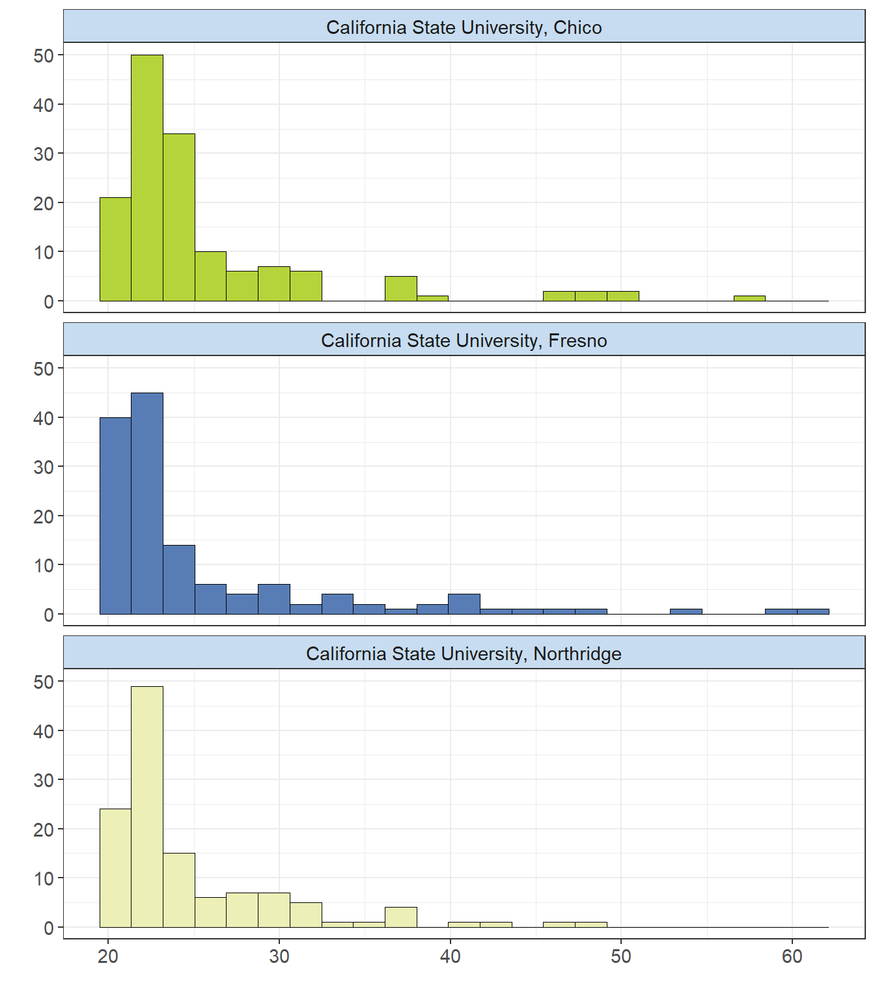
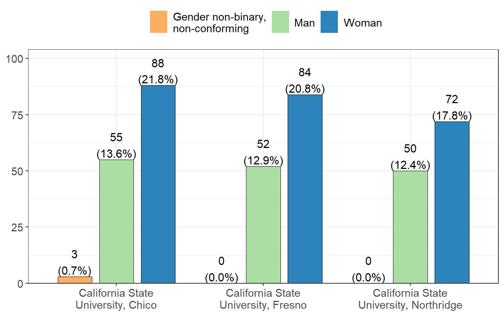
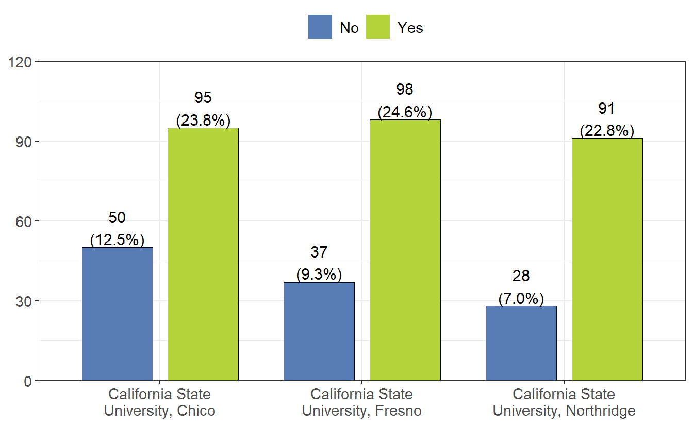
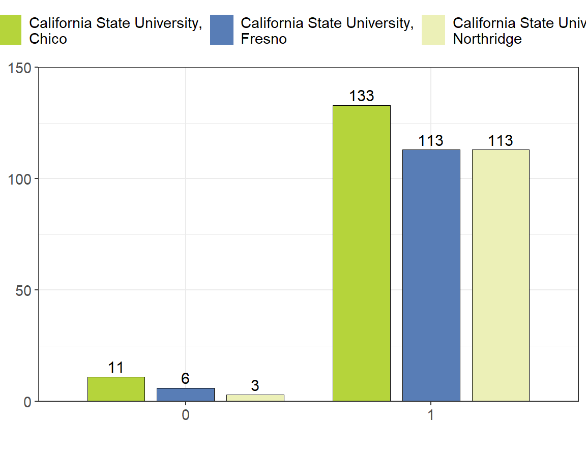
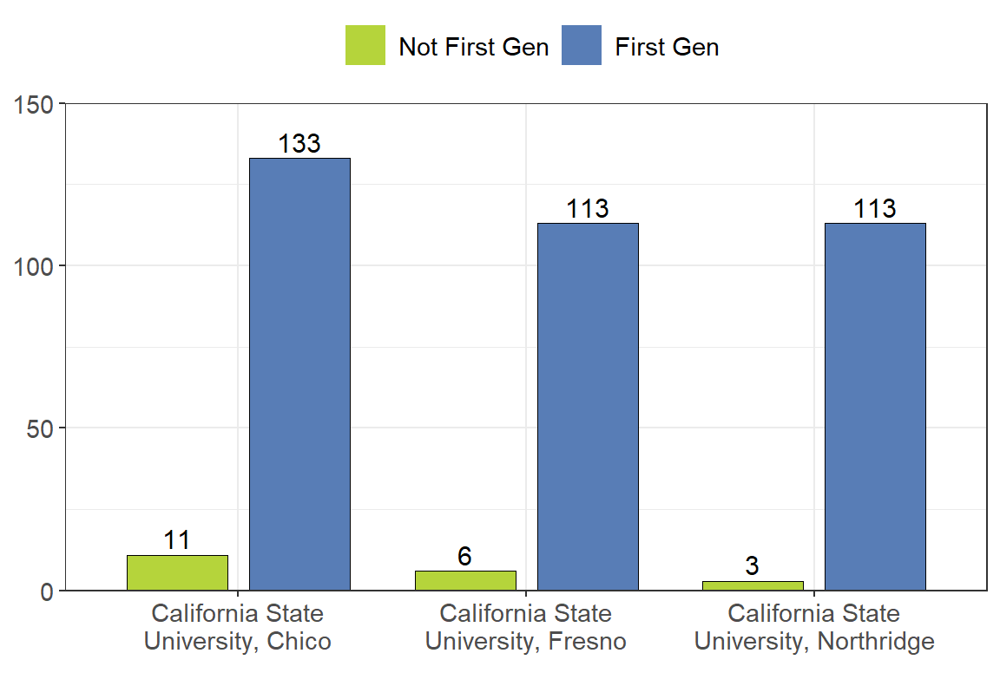

Personal Demographics by Campus
The following is a comparison across the 3 campuses (Chico, Fresno, and Northridge) for information relating to the personal demographics of the students. This includes information such as students age at the time of the survey (2020), their gender identity, any ethnicities they identify as, and their parents education (in order to determine first generation students). The purpose is to see if any key differences are seen between the campuses, or if similar information is captured among them.
Age
The following was determined by taking the difference between birthdate and the time at which the survey was completed (n=407, 98% of 415 reporting).  Figure 5.1: Age Distribution by Campus
Looking at the age across each campus, it seems that again the distribution seems very similar for each. CSU Chico has an average age of 25.57 years old, and a median of 23.2 years old. CSU Fresno has an average age of 25.59 years old, and a median of 22.3 years old. CSU Northridge has an average age of 24.84 years old, and a median of 22.7 years old.
Gender
What is your gender identity? (n=404, 97% of 415 reporting).  Figure 5.2: Gender Identification by Campus
Looking at the distribution of gender across the campuses for survey participants, we can see that the majority of them are female. Chico seems to have the highest number of participants for each gender, with Fresno coming in second, and Northridge coming in behind them.
Ethnicity
In the US Census, Hispanic Origins are not races. Do you identify as Hispanic or Latino or Spanish Origin? (n=399, 96% of 415 reporting).  Figure 5.3: Hispanic Origin Identification by Campus
For the above graph, Hispanic Origin includes: Mexican, Mexican American, Chicano, Puerto Rican, or another Hispanic/Latino/Spanish origin. It seems that most of the campuses have around the same number of students who do identify as having Hispanic origin (Fresno first, followed by Chico, and finally Northridge). Looking at students who do not identify as having Hispanic origin, Chico seems to have the most (50 people), followed by Fresno, and finally Northridge.
Race
What race do you identify as? (Select all that apply). Note that below only the values within the table represent “Yes (% of school total)”.
Table 5.1: Race Identification by Campus| California State University, Chico | California State University, Fresno | California State University, Northridge | |
|---|---|---|---|
| White | 57 (58.8%) | 57 (57.6%) | 41 (52.6%) |
| Black or African American | 10 (10.3%) | 5 (5.1%) | 11 (14.1%) |
| American Indian and Alaska Native | 7 (7.2%) | 7 (7.1%) | 12 (15.4%) |
| Asian | 22 (22.7%) | 27 (27.3%) | 12 (15.4%) |
| Native Hawaiian and Other Pacific Islander | 1 (1.0%) | 3 (3.0%) | 2 (2.6%) |
It seems that for participants in the survey, over 50% identify as White for each campus. Both Chico and Fresno had their second most common ethnicity being Other Asian. Northridge had its second most common ethnicity being American Indian, closely followed by African American.
Parents Education
What is the highest level of education completed by your parents/guardians? (n=402, 97% of 415 reporting).  Figure 5.4: Parents Highest Education by Campus
It seems that for students with parents that have some type of college education (Associate’s, Bachelor’s, Master’s) CSU Chico leads in all categories, followed by CSU Fresno, and finally CSU Northridge. CSU Chico also seems to have the most students whose parents had some college education, but no degree. CSU Fresno seems to have the most students who claim their parents highest level of education is less than high school.
First Generation
(n=379, 91% of 415 reporting).  Figure 5.5: First Generation College Students by Campus
Looking at the first generation students (see Demographics: Personal Demographics for definition of first generation students), we can see that CSU Chico seems to have the most first generation college students followed by Northridge and Fresno which are tied. It seems that Chico also has the most students that are not first gen, followed by Fresno, and then Northridge.
Student Demographics
Click here to go to the Personal Demographics page.
Workload
Click here to go to the Workload page.
Funding
Partially funded by USDA SNAP, known in California as CalFresh, an equal opportunity provider and employer, and the California Department of Social Services. Any use of these results in further work must use the following citation:Center for Healthy Communities, "Basic Needs Survey", June 2020. Retrieved on xx-xxx-xxxx from https://chicocalfresh.github.io/bns-website/index.html